10 Three Variables
Sometimes you will want to create a graph for three variables at a time. This could be any combination of continuous and categorical variables.
If you add an additional categorical variable to any of combination of two variables (2 categorical, 2 continuous, or 1 categorical + 1 continuous), typically the easiest thing to do is to add another aesthetic to any graph, such as color or shape. But we could also break the graph into different pieces called “facets”, which are explained in more detail below.
10.1 3 Categorical Variables
The first option is to add another aesthetic to a graph with 2 categorical variables (you had experience with doing this last week).
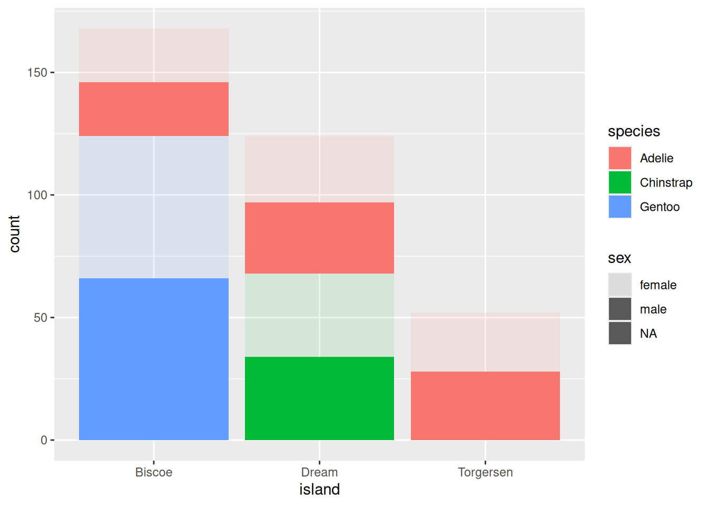
As you can tell, using a bar graph may not be ideal for this situation because the alpha looks bad. We could use a geom_jitter() instead.
penguins %>%
ggplot(aes(x = island, y = sex, color = species)) +
geom_jitter()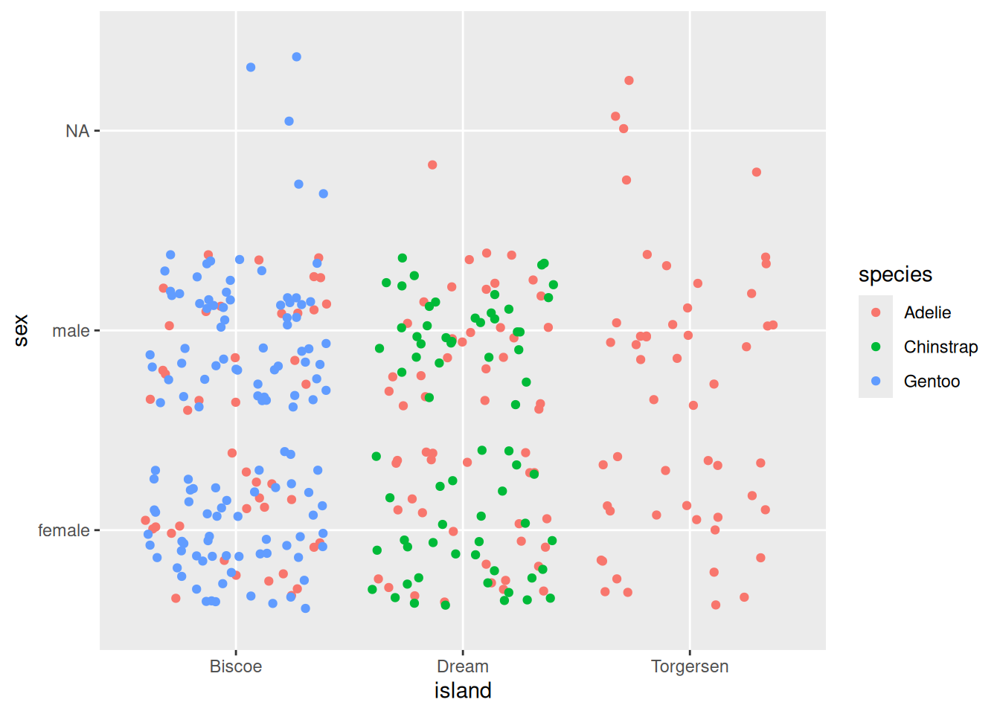
That’s a little better!
10.1.1 Faceting
Another option is to create separate graphs for each category within one of your categorical variables. This is known as “faceting” (not to be confused with facetuning), and can be done using the function facet_grid(). Faceting allows you to apply the same ggplot code to different subsets of data, generating multiple graphs at the same time.
In facet_grid(), you must specify what variable(s) you want to facet by, and whether you want those graphs spread across different columns
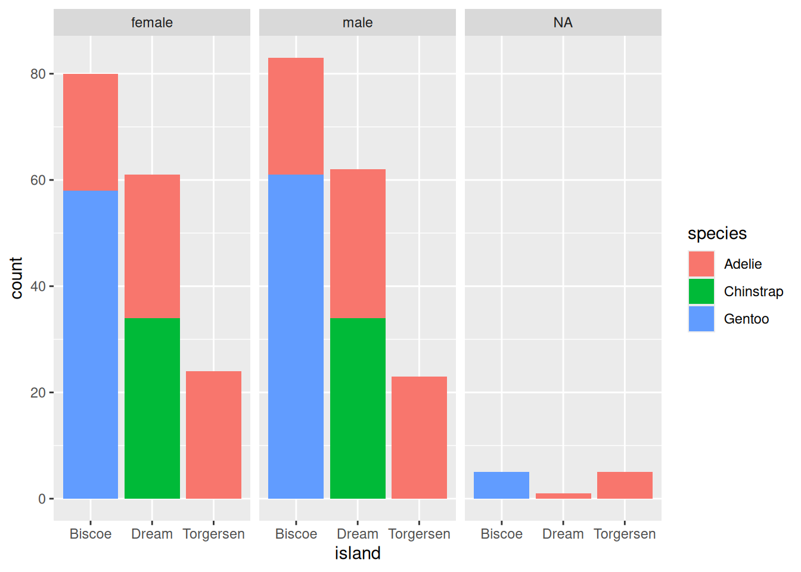
or spread across different rows.
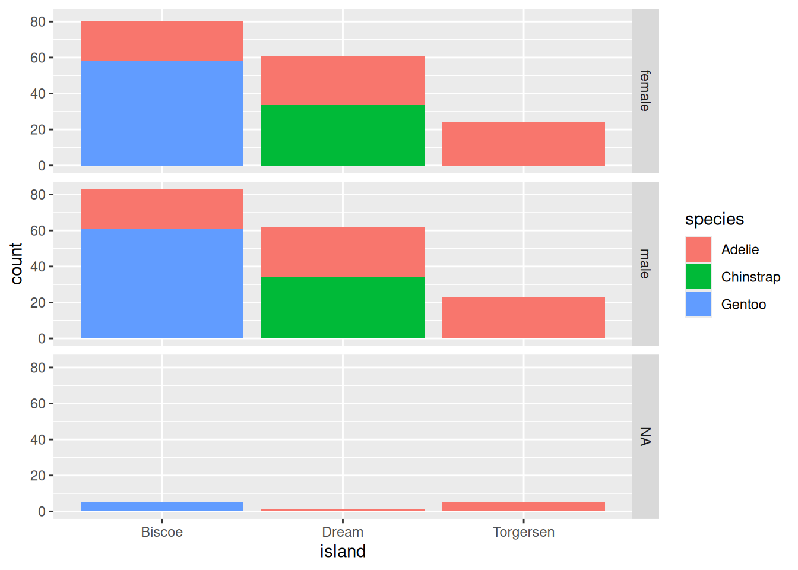
For larger datasets, you can facet across rows by one variable and columns by another. This is a quick, easy, and yet very powerful way to explore larger datasets and the conditional relationships that may exist between certain variables.
penguins %>%
ggplot(aes(x = island, fill = species)) +
geom_bar() +
facet_grid(rows = vars(species),
cols = vars(sex))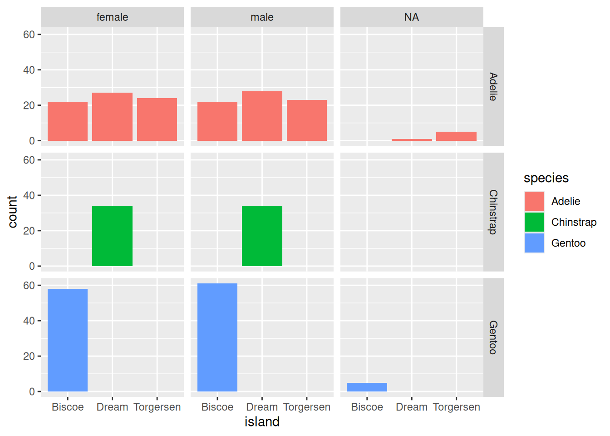
For other combinations of 3 variables, these two options of adding another aesthetic and faceting will probably be the best option for creating a visualization.
10.2 2 Categorical, 1 Continuous
In this situation, you can also use another aesthetic. In this case, adding species to the color argument
penguins %>%
ggplot(aes(y = body_mass_g, x = island)) +
geom_jitter(aes(color = species)) +
stat_summary(fun.data = "mean_se",
geom = "pointrange",
color = "black")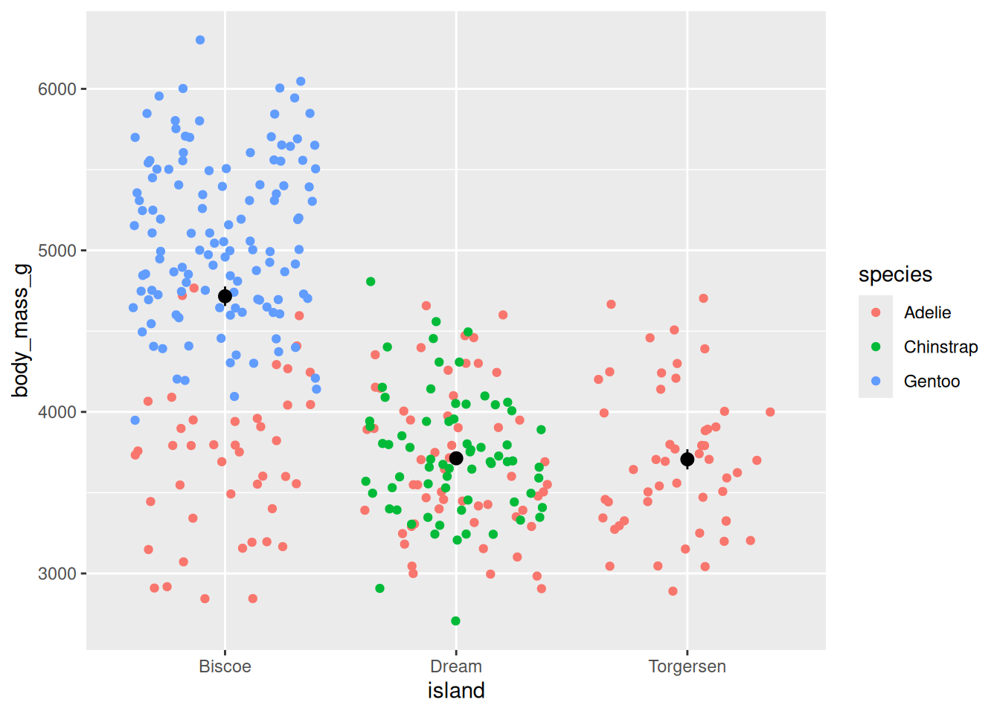
or facet by species.
penguins %>%
ggplot(aes(y = body_mass_g, x = island)) +
geom_jitter() +
stat_summary(fun.data = "mean_se",
geom = "pointrange",
color = "blue") +
facet_grid(cols = vars(species))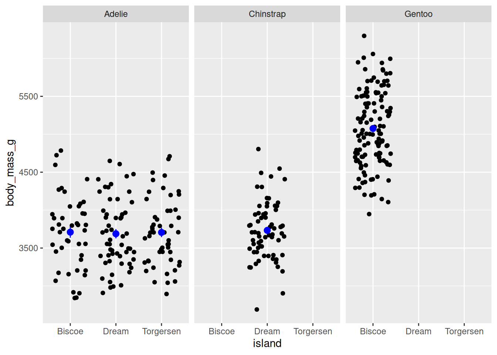
You could also combine color and facet into one graph!
penguins %>%
ggplot(aes(y = body_mass_g, x = island)) +
geom_jitter(aes(color = species)) +
stat_summary(fun.data = "mean_se",
geom = "pointrange",
color = "black") +
facet_grid(cols = vars(species))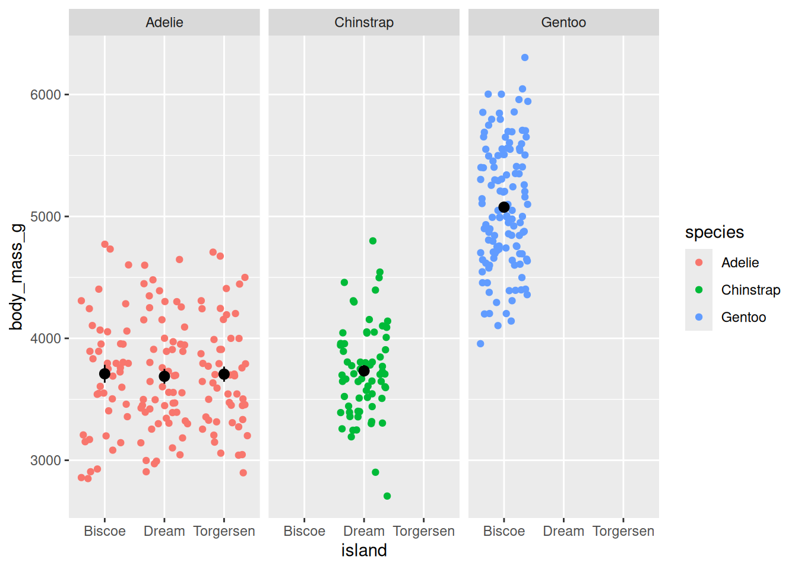
10.3 1 Categorical, 2 Continuous
Again, you can add another aesthetic with the categorical variable:
penguins %>%
ggplot(aes(y = body_mass_g, x = bill_depth_mm, color = species)) +
geom_point()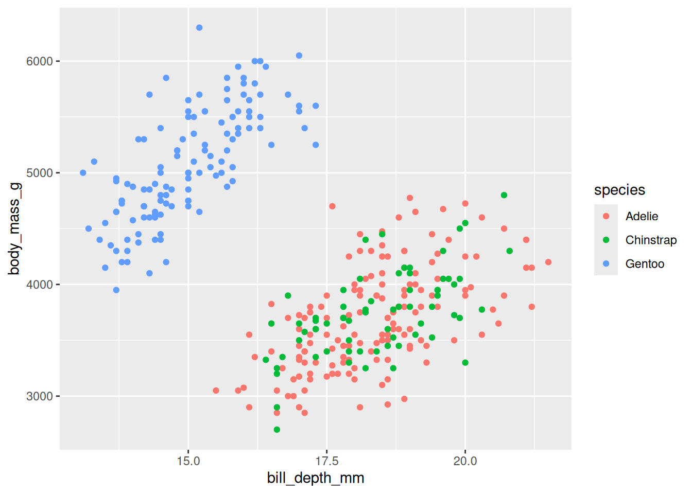
or facet:
penguins %>%
ggplot(aes(y = body_mass_g, x = bill_depth_mm)) +
geom_point()+
facet_grid(cols = vars(species))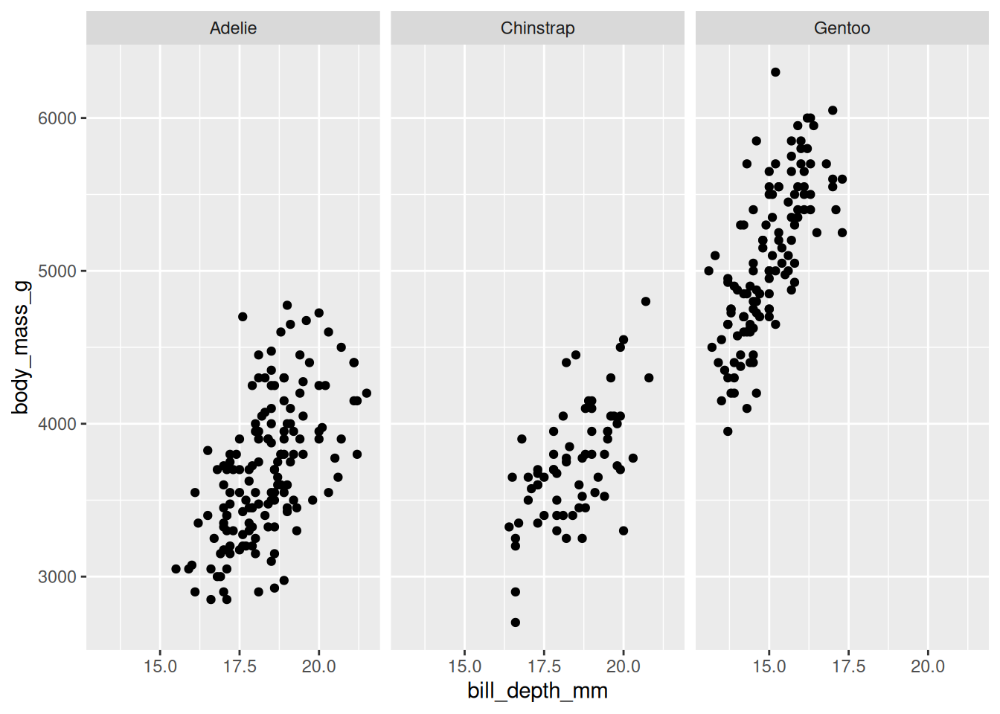
10.4 3 Continuous variables
The only combination of three variables we haven’t covered yet is 3 continuous variables. This is a little trickier because most of our aesthetics (like color and shape) are categorical, not continuous. Alpha is continuous, so we could use that.
penguins %>%
ggplot(aes(y = body_mass_g, x = bill_depth_mm, alpha = flipper_length_mm)) +
geom_point()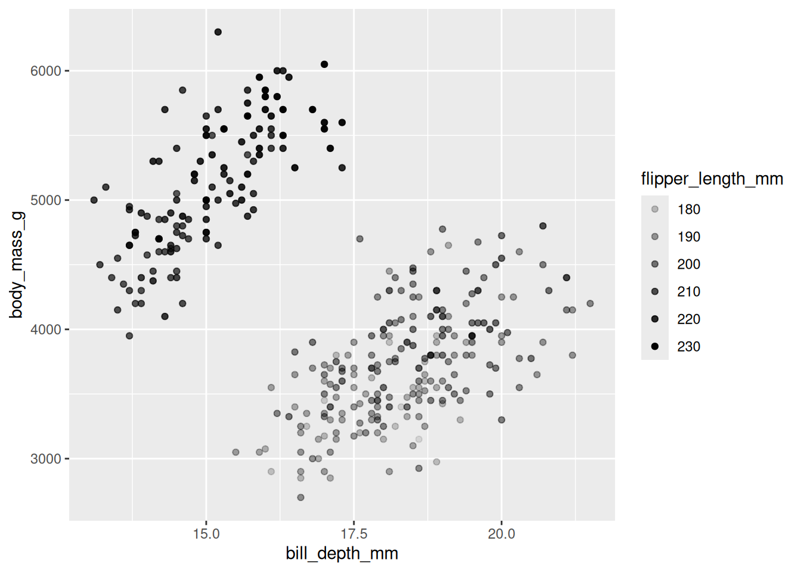
However, as usual, alpha is a little difficult to interpret.
Another option is to extend the 2d histogram we used above, except instead of counts, the color gradation shows values on a continuous variable.
penguins %>%
ggplot(aes(y = body_mass_g,
x = bill_depth_mm,
z = flipper_length_mm)) +
stat_summary_2d(color = "black")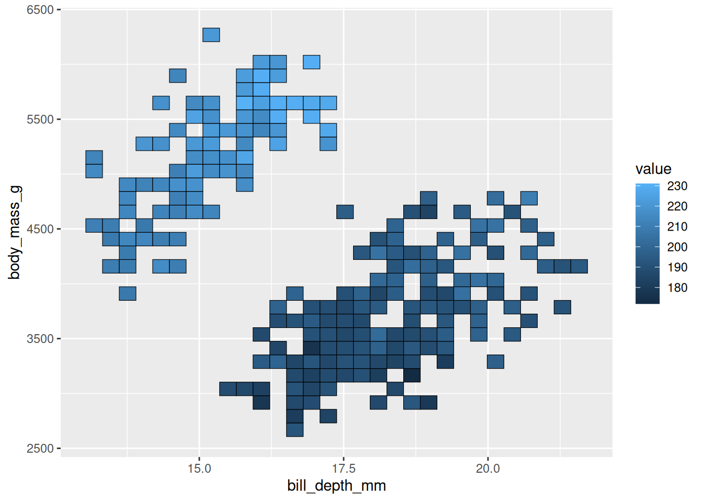
This may (or may not) be easier to interpret, but at least it’s another option!
10.5 Best Practices:
Below are some guidelines and best practices that should be considered when designing your visualizations.
- Graphs should be EASILY readable, first and foremost. This should be the top design philosophy when constructing your graphs.
- Label everything (axes, titles, legends, anything else) and make labels intuitive.
- Follow conventions: y = response variable, x = predictor, be mindful of variable types, etc.
- People should not need to review the caption to understand what the visualization is showing.
- Graphs should be purposeful
- What is the specific relationship or trend in your data that you are trying to communicate with this visualization?
- Graphs should facilitate quantitative interpretation and comparison, and allow for inferential statistics by eye.
- Represent variability (show the full distribution, include error bars or confidence intervals).
- Show relationship trends, means, etc.
- Cool =/= best.
- Just because you can make some crazy complex graph that visualizes a lot of different variables, or might even be interactive and show you a lot of information, does not mean that is the best thing to do. Just because you CAN do something does not always mean you SHOULD. Keep things simple and clean, following the conventions for that type of data or relationship.
- Make your visualization aesthetically pleasing but not at the cost of wasting ink.
10.6 Extra Resources
- ggplot2 reference
- R graphics cookbook
- ggplot2 book
- ggplot2 cheat sheet
- Help understand different types of graphs
- Recommendations on best graphs for visualizing particular relationships
- r-specific information on how to construct graphs
- More r-specific stuff. Top 50 ggplot geoms
- Info on plotly
- ggplot2 extensions
- Fundamentals of Data Visualization
10.7 Citations
As always, most illustrations by Horst (2022)